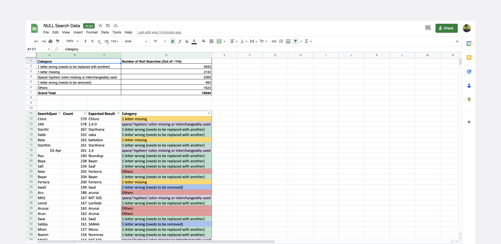
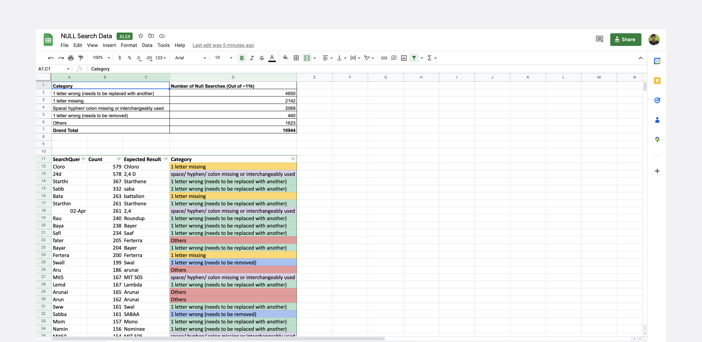
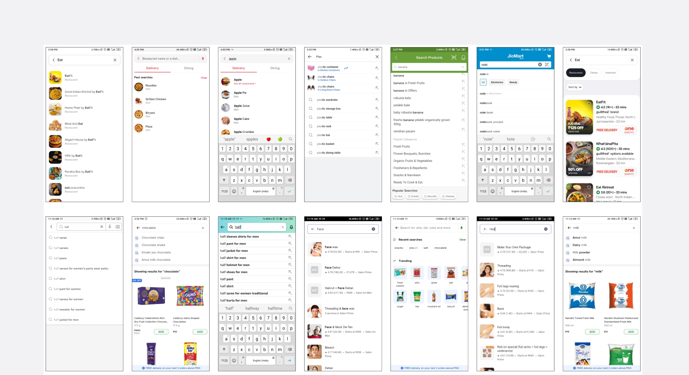
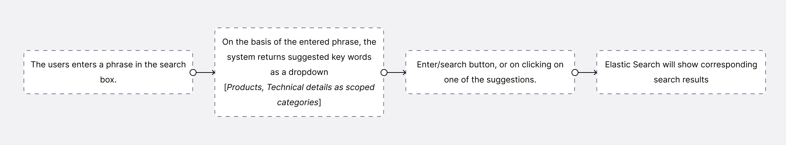
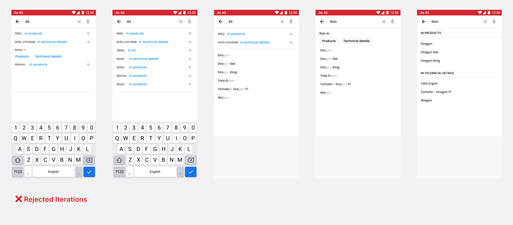
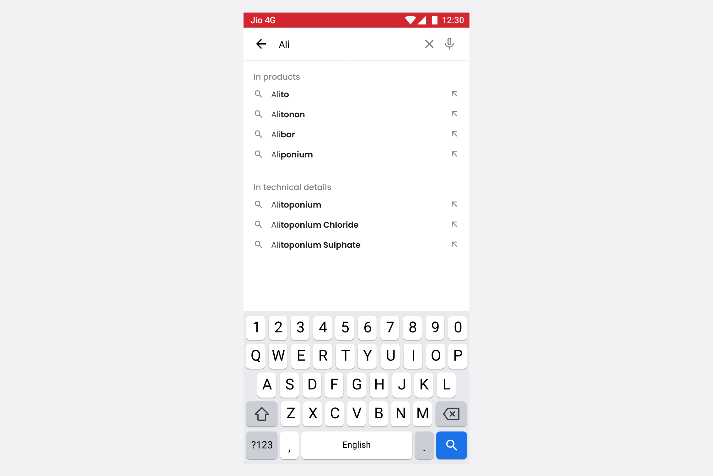
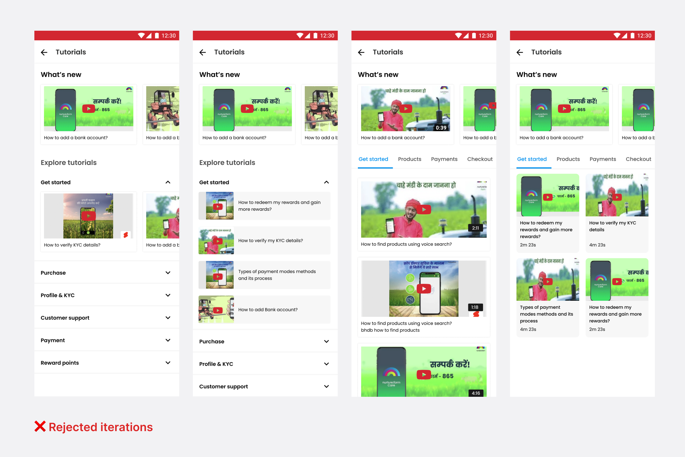
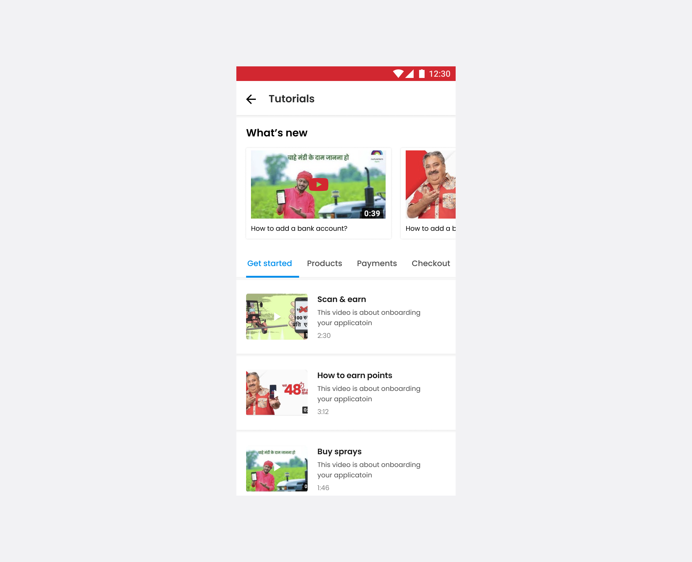

nurture farm has a commerce app which brings in a new age Agri-input marketplace to 80,000 retailers. This app allows Agri-input retailers and dealers to buy pesticides, fertilizers, agriculture tools, and other crop protection products directly from the manufacturers at best prices.
I joined the design team as an Associate Product Designer in July 2022. My work involves mostly improving the engagement, retention, and cart experience of the app. I have worked on multiple tasks, but here I'll be focusing on two problems that I solved for
Problem Statement #1
Search is one of the primary ways that people use to find products in the app. With just a few taps, you can quickly find the product you want. Recently, we also introduced voice search feature to make the search process even more convenient and faster, which has been very successful and has been well-received by users.
What was the problem?
30% of the users use the search feature every day. Out of these searches, 20% don't return any results. Additionally, the system is set up to trigger a search for every character typed, which is causing a large number of search queries. The goal is to decrease the number of searches that don't return any results and to reduce the total number of search queries the system handles.
Why did null searches occur?
With our current logic of how our search functions, it was not flexible enough that user’s were not getting the right search results when they perform search. Even a small mistakes like 1 letter misspell, adding hyphen/space/colon, 1 letter missing would not return the right results.
This was particularly higher in recent times with more new products being added in the app and some of product names are difficult to remember - so users might not recall the right spelling of the products. This resulted in users leaving the app thinking that the product is unavailable while, in fact, the app was unable to provide relevant search results.
 

The approach - Introducing Elastic search
More than 85% of queries can be resolved by adding, removing, or replacing just 1 character from the search results. I had an elaborate discussion with PM and we thought of integrating ‘Elastic search’ to correctly identify the typed phrase in case of common errors. It can be able to achieve fast search responses because instead of searching the text directly, it searches an index. So we help everyone find what they need faster.
We discussed on all the technical logics on how it should function, but here I am not gonna get into everything and try to keep it short for easy understanding.

The problem with that is each time a character is typed the system triggers the search and shows the results which is not efficient way as it calls multiple times from the backend.
Secondary study
First I wanted to study & understand how the search functionality of most successful apps works. EX: Jiomart, Blinkit, Zepto, Flipkart, Amazon. Through this I was able to understand that each app has its own specific approach to how their search functionality operates, as it's understandable that each app has different products and customers have different preferences on what to search.
Defining the logic for our search
I had discussion with the PM and we defined the logic on how the flow should work. In order to show right suggestions and reduce the number of loading time, we decided to show the suggestions list like how google search does - instead of triggering search while you’re typing.
We also had data that users search try searching through technical details of the products such pesticides, fertilizers etc(Ex: ammonia, chrolide). Similar to how we search “18GB RAM mobile” in flipkart or amazon.
Iterations....
I tried various ways to present the results for easier understanding and in my attempts, I found that each iteration resulted in a more cluttered and visually overwhelming. The more the information is added, the more it gets complicated. I started showing these around to the folks at nurture farm and they also felt the same way.
What we landed on
Finally, I ended up with the separating them two in separate heading with relevant searches below each. This design felt more familiar and brings much easier understanding with less learning curve.
Problem Statement #2
I was asked to rework on the current tutorial page of the app as we have received more number of queries stating that some of the users don’t know how to do basic things like placing an order, completing the KYC and were struggling to understand the app.
It was an anticipated issue as many farmers are not technologically proficient and may have limited digital literacy. We believed that one way to educate them was by providing informational and helpful tutorial videos. We already had a tutorial section in the app, but it was not well-designed and did not generate much engagement from users.
Issues with current tutorial design
- Lack of structured content to discover videos
- Lack of focus on newly launched tutorial videos for new features
- Progressive disclosure will hide the thumbnail and fails to give some expectations for the users and also requires extra click to view.
Explorations
I wanted to try visual heavy approach of multiple videos with thumbnails shown as soon as user enters the tutorial page. So far we had only around 8 tutorial videos uploaded in the app. But this could change in immediate future as the team was planning to include detailed tutorials for every process such buying a product, making different payments, and other key functions etc.
So to make it easier for the user to navigate, I wanted to categorize the page and make it efficient to discover videos once the user enters the page. So I asked the PM to create the names for the categories and made them as tab switching.
I iterated through different layouts and structure with the goal of achieving best way of presenting the videos. Some of the designs looked best in initially, but seems not feasible if the videos are larger and scaled.
What we landed on
After considering various options, we finally decided on this design that effectively balances the need for minimal space usage with the provision of sufficient information for users to make informed decisions about what videos to watch. The design is specifically tailored to avoid overwhelming users with excessive information and to provide a clear and concise overview of the relevant details.
Conclusion
My time at nurture farm has been a truly positive experience for me. The team was also very supportive and provided regular feedback on my work, which helped me to stay on track and make sure that my designs were meeting the needs of the users and the business.